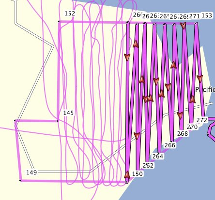

A peine de retour, je n'ai pas pu résister à la tentation de tester une série de données réalisée sur Vulcano... pour l'instant, traité avec les moyens du bord, c'est-à-dire un petit ordinateur portable sans carte graphique, les résultats sont prometteurs !
Côté Stromboli, en revanche, la face Nord-Ouest nous a échappé, et le contre-jour rend une partie des clichés inexploitables par les différents algorithmes.
La zone d'étude de nos amis du LMV, en revanche, semble être de bonne qualité.